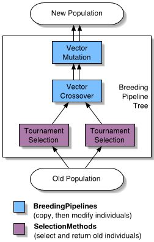

| ECJ |
With the first tutorial, we will build an evolutionary computation system that uses:
The tutorial described here assumes that you have already set up ECJ's classpath and understand how to run the example problems. The tutorial also assumes you're using a UNIX box (I'm on a MacOS X machine); you may have to make small modifications to pathnames etc. if it doesn't work on a non-UNIX machine.
It should be noted that in this tutorial you will have to do a lot of work setting up parameters that ordinarily you won't have to do -- there are default parameter files in ECJ to do nearly all of this work for you already. However, we'll go through the annoyance of setting up the whole system from scratch in this first tutorial, so you can see what all those little parameters do. In Tutorial 2, for example, you'll have many fewer parameters, because we'll just use the defaults ECJ provides.
Go into the ec/app directory and create a directory called tutorial1. In this directory, create a file called tutorial1.params. The params file is where we will specify parameters which direct ECJ to do an evolutionary run. ECJ parameters guide practically every aspect of ECJ's operation, down to the specific classes to be loaded for various functions.
Parameter files are modifications of Java Property List files, and have an identical syntax. You would do well to read the introduction to Parameter files. You might also read the ec/ec.params parameter file, it has documentation in it which discusses the proper syntax of parameters.
ECJ's top-level object is ec.Evolve. Evolve has only one purpose: to initialize a subclass of ec.EvolutionState, set it up, and get it going. The entire evolutionary system is contained somewhere within the EvolutionState object or a sub-object hanging off of it.
The EvolutionState object stores a lot of top-level global evolution parameters and several important top-level objects which define the general evolution mechanism. Some of the parameters include:
Some of the top-level objects inside EvolutionState include:
Let's begin by defining some basic parameters in our params file which the Evolve class uses. Since Evolve (oddly given its name) isn't involved in evolution, these parameters are mostly administrative stuff. Add the following parameters to your tutorial1.params file.
breedthreads = 1
evalthreads = 1
seed.0 = 4357
Most of the things ECJ prints out to the terminal are messages. A message is a string which is sent to the Output facility to be printed and logged. Messages can take several forms, though you'll usually see: plain-old messages, warnings, errors, and fatal errors. A fatal error causes ECJ to quit as soon as it is printed and logged. An ordinary error raises an error flag in the Output facility; ECJ can wait after a string of errors before it finally quits (to give you more debugging information). Warnings and messages do not quit ECJ. ^M
The next lines tell ECJ whether or not it should be multithreaded. If you're running on a single-processor machine, it rarely makes sense to be multithreaded (in fact, it's generally slower). breedthreads tells the Breeder how many threads to spawn when breeding. evalthreads tells the Evaluator how many threads to spawn when evaluating.
Each thread will be given its own unique random number generator. You should make sure that these generators have different seeds from one another. The generator seeds are seed.0, seed.1 .... up to seed.n where n = max(breedthreads,evalthreads) - 1. Since we have only one thread, we only need one random number generator. 4357 is a good initial seed for the generator: but remember that if you run your evolution twice with the same seed, you'll get the same results! So change your seed for each run. If you'd like the system to automatically change the seed to an arbitrary seed each time you run, you can base the seed on the current wall clock time. You do this by saying seed.0 = time
Next let's define our evolution state. The simple package defines lots of basic generational evolution stuff, and we can borrow liberally from it for most of our purposes. We'll start by using its EvolutionState subclass, ec.simple.SimpleEvolutionState. We do this by defining a final parameter which Evolve uses to set stuff up:
state = ec.simple.SimpleEvolutionState
Define Parameters for the SimpleEvolutionState object
SimpleEvolutionState defines a simple, generational, non-coevolutionary evolution procedure. The procedure is as follows:
In between any of these steps, there are hooks to call the Statistics object so it can update itself and print out statistics information. Since our Exchanger will do nothing, steps 5 and 7 won't do anything at all.
SimpleEvolutionState can work with a variety of Initializers, Evaluators, Breeders, Exchangers, Finishers, and Populations. But to keep things simple, let's use the basic ones which go along with it nicely. Here are some parameters which will direct SimpleEvolutionState to load these classes:
pop = ec.Population
init = ec.simple.SimpleInitializer
finish = ec.simple.SimpleFinisher
breed = ec.simple.SimpleBreeder
eval = ec.simple.SimpleEvaluator
stat = ec.simple.SimpleStatistics
exch = ec.simple.SimpleExchanger
SimpleInitializer makes a population by loading an instance of (in this case ec.Population) and telling it to populate itself randomly. Populations, by the way, can also load themselves from files (see the Subpopulation documentation). The SimpleEvaluator evaluates each individual in the population independently. The SimpleStatistics just reports basic statistical information on a per-generation basis. The SimpleExchanger and SimpleFinisher do nothing at all.
Additionally, there are some more parameters that SimpleEvolutionState needs:
generations = 200
quit-on-run-complete = true
checkpoint = false
checkpoint-prefix = ec
checkpoint-modulo = 1
generations is the number of generations to run. quit-on-run-complete tells us whether or not we should quit ECJ when it finds an ideal individual; otherwise it will continue until it runs out of generations.
checkpoint tells ECJ that it should perform checkpointing every checkpoint-modulo generations, using a Gzipped checkpoint file whose name begins with the prefix specified in checkpoint-prefix. Checkpointing saves out the state of the entire evolutionary process to a file; you can then start from that point by launching ECJ on that checkpoint file (for more information on how to do this, see the Evolve documentation). If you have a long run and expect that the power might go out or the system might be shut down, you may want to checkpoint. Otherwise don't do it, it's an expensive thing to do.
SimpleStatistics requires a file to write out to. Let's tell it that it should write out to a file called out.stat, located right where the user launched ECJ at (that's what the $ is for):
stat.file = $out.stat
How do we know that SimpleStatistics needs a file? Because it says so. In the SimpleStatistics documentation, we're told that there is a parameter called base.file. A great many objects in ECJ have parameter bases. The parameter base is passed to the object when it is created, and is prefixed to its parameter names. That way, for example, you could conceivably create two different Statistics objects, pass them different bases, and they'd be able to load different parameters. Some ECJ objects also have a default base which defines a secondary parameter location that the object will look for if it can't find a parameter it needs at its standard parameter base. This allows some objects to all use the same default parameters, but specialize only on certain ones.
SimpleStatistics doesn't have a default base. It's too high-level an object to need one. The base for our SimpleStatistics object is stat. Usually the bases for objects correspond with the parameter name that specified what class they were supposed to be. For SimpleStatistics, for example, the class-specifying parameter was stat = ec.simple.SimpleStatistics, hence stat is the base, and the SimpleStatistics' output filename is at stat.file.
If no file is specified, by the way, SimpleStatistics will just output statistics to the screen.
We begin by telling ECJ that the Population will have only one Subpopulation, and we'll use the default Subpopulation class for subpopulation #0.
pop.subpops = 1
pop.subpop.0 = ec.Subpopulation
Note that Population, like Statistics, also uses parameter bases (in this case its base is pop). Similarly, Subpopulation #0 has a parameter base. It will be, you guessed it, pop.subpop.0. Let's define some stuff about Subpopulation #0:
pop.subpop.0.size = 100
pop.subpop.0.duplicate-retries = 0
pop.subpop.0.species = ec.vector.BitVectorSpecies
We've first stated that the size of the subpopulation is going to be 100 individuals. Also, when initializing themselves, subpopulations can guarantee that they won't duplicate individuals: they do this by generating an individual over and over again until it's different from its peers. By default we're telling the system not to bother to do this, duplicates are fine.
As mentioned earlier, every Subpopulation has an associated ec.Species which defines features of the Individuals in the Subpopulation: specifically, how to create them and how to breed them. This is the first representation-specific object we've seen so far: ec.vector.VectorSpecies defines a particular kind of Species that knows how to make BitVectorIndividuals, which are the kind of individuals we'll be using. Other kinds of individuals require their own special Species classes.
Species hold a prototypical Individual which they clone multiple times to create new Individuals for that Species. This is the first place you will see the notion of prototypes in ECJ, a concept that's used widely. A prototype is an object which can be loaded once from the parameter files, and set up, then cloned repeatedly to make lots of customized copies of itself. In ECJ, Individuals are prototypes.
The parameters for ec.Species are where the individual is specified:
pop.subpop.0.species.ind = ec.vector.BitVectorIndividual
Here we stipulate that the kind of individual used is a ec.vector.BitVectorIndividual, which defines an Individual that holds a vector of with boolean values. VectorSpecies also holds various parameters that all
individuals of that species will abide by:
pop.subpop.0.species.genome-size = 100
pop.subpop.0.species.crossover-type = one
pop.subpop.0.species.mutation-type = flip
pop.subpop.0.species.mutation-prob = 0.01
This stipulates that our individuals will be vectors of 100 bits, that their "default" crossover will be one-point crossover, that mutation of a gene will be done by flipping its bit, and finally that each bit will have a 1% probability of getting bit-flipped, independent of other bits.
We'll get to the "default" crossover and mutation in a second, but first note that VectorSpecies is a Prototype, and Prototypes almost always have default parameter bases to fall back on. The default parameter base for VectorSpecies is vector.species (see the VectorSpecies documentation). For example, instead of explicitly saying that all indivividuals in the species used in subpopulation #0 of the population are supposed to have a genome-size of 100, we could have simply said that all individuals belonging to any VectorSpecies have a genome size of 100 unless otherwise stipulated. We say it like this: vector.species.genome-size = 100
pop.subpop.0.species.fitness = ec.simple.SimpleFitness
Every Individual has some kind of fitness attached to it, defined by a subclass of ec.Fitness. Fitnesses are not built into Individuals; and instances of the same Individual subclass can have different kinds of Fitnesses if you see fit. Fitnesses are prototypes just like Individuals are: each Species instantiates one Fitness subclass, called the prototypical Fitness, and uses that class to clone copies which are attached to new Individuals the Species has created.
Here we say that we will use ec.simple.SimpleFitness as our fitness class. SimpleFitness defines fitness values from 0.0 inclusive to infinity exclusive, where 0.0 is the worst possible fitness, and infinity is better than the ideal fitness. You can define the ideal fitness to any value greater than 0, we'll get to that later.
ECJ has a very flexible breeding mechanism called a breeding pipeline. It's not actually a pipeline per se: it's really a tree. The leaves of the tree are selection methods, responsible for picking individuals from the old population. Nonleaf nodes of the tree are breeding operators, which take individuals handed them by their child nodes, breed them, and send them to their parent node. The root of the tree then hands completely-bred individuals to be added to the new population.
We will define a breeding pipeline which does the following. First, it picks two individuals from the population and hands them to be crossed over. The crossover operator then hands the individuals to a mutation operator to be mutated. The mutation operator then hands the individuals off to be placed into the new population. The tree thus has a mutation operator at the root, with one child (the crossover operator). The crossover operator has two children, each selection methods. The pipeline is shown at right.
For a mutation operator we will use ec.vector.breed.VectorMutationPipeline. This operator requests Individuals of its sole child source (the crossover operator), then mutates all of them. It mutates them by simply calling the default mutation method defined in the Individuals themselves. If you want some non-default mutation method (like vector-inversion), you'll need to define your own BreedingPipeline subclass to do the custom mutation.
Similarly, for a crossover operator we will use ec.vector.breed.VectorCrossoverPipeline. This operator requests one Individual from each of its two child sources (in this case, the selection methods), then crosses them over and returns both of them at once. This pipeline does its crossover simply by calling the default crossover method defined in the Individuals themselves. Once again, if you want a special kind of crossover not stipulated in the defaults, you'll need to define your own BreedingPipeline subclass to do the special crossover.
Lastly, for our selection methods, let's use ec.select.TournamentSelection, which defines basic tournament-selection.
The root of the pipeline is defined by the parameter pop.subpop.0.species.pipe, and everything else derives its base off of it in a hierarchical fashion:
pop.subpop.0.species.pipe = ec.vector.breed.VectorMutationPipeline
pop.subpop.0.species.pipe.source.0 = ec.vector.breed.VectorCrossoverPipeline
pop.subpop.0.species.pipe.source.0.source.0 = ec.select.TournamentSelection
pop.subpop.0.species.pipe.source.0.source.1 = ec.select.TournamentSelection
Because the default mutation and crossover probabilities and types were defined as part of the BitVectorIndividuals, we don't need to stipulate those parameters here. But one thing is left: we have to define the tournament size for our TournamentSelection to be 2. We could explicitly define sizes for each of the selection operators as follows:
pop.subpop.0.species.pipe.source.0.source.0.size = 2
pop.subpop.0.species.pipe.source.0.source.1.size = 2
...but TournamentSelection (and all selection methods and breeding pipeline operators) is a Prototype, and so it has a default base we could simply use instead:
select.tournament.size = 2
So far, we've managed to define the high-level evolutionary process, administrative details, representation, and complete breeding procedure without writing a single drop of code. But not any more. Now we have to write the object that's actually responsible for assessing the fitness of our Individuals. This object is called a Problem, and it is specified as a parameter in our Evaluator. We will create a Problem subclass called ec.app.tutorial1.MaxOnes which will take an Individual, evaluate it, and hand it back. Before we do so, we have one more self-explanatory parameter to define:
eval.problem = ec.app.tutorial1.MaxOnes
Now close the tutorial1.params file and open a new file (also in the tutorial1 directory) called MaxOnes.java. In the file, write:
package ec.app.tutorial1;
import ec.*;
import ec.simple.*;
import ec.util.*;
import ec.vector.*;
public class MaxOnes extends Problem implements SimpleProblemForm
{
If you look at the Problem documentation, you'll notice it defines precious few methods. First, it defines a setup method, which you can override (remember to call super.setup(...) ) to set up the prototypical Problem from a parameter file. Your Problem will be a clone of this prototypical Problem. Second, it defines the method clone() which is used to make (deep) copies of the Problem. Java's clone() method doesn't deep-clone by default; so if you have an object holding (for example) an array inside it, and clone the object, the array isn't cloned. Instead both objects now point to the same array. ECJ instead calls clone() on you, and you're responsible for cloning yourself properly. Instructions for doing this are described in the documentation.
Since we're not defining any instance data that needs to be loaded from a parameter file or specially cloned, we don't even need to touch these methods. So what methods do we actually need to implement? As it turns out, Problem doesn't actually define any methods for evaluating individuals. Instead, there are special interfaces which various Evaluators use that you must implement. SimpleEvaluator requires that its Problems implement the ec.simple.SimpleProblemForm interface. This interface defines two methods, evaluate (required) and describe (optional). evaluate takes an individual, evaluates it somehow, sets its fitness, and marks it evaluated. describe takes an individual and prints out to a log some information about how the individual operates (maybe a map of it running around, or whatever you'd like). describe is called when the statistics wants to print out "special" information about the best individual of the generation or of the run, and it's not necessary. We'll leave it blank.
Here's the first part of the evaluate method:
// ind is the individual to be evaluated.
// We're given state and threadnum primarily so we
// have access to a random number generator
// (in the form: state.random[threadnum] )
// and to the output facility
public void evaluate(final EvolutionState state,
final Individual ind,
final int subpopulation,
final int threadnum)
{
if (ind.evaluated) return; //don't evaluate the individual if it's already evaluated
Individuals contain two main pieces of data: evaluated, which indicates that they've been evaluated already, and fitness, which stores their fitness object. Continuing:
if (!(ind instanceof BitVectorIndividual))
state.output.fatal("Whoa! It's not a BitVectorIndividual!!!",null);
BitVectorIndividual ind2 = (BitVectorIndividual)ind;
First we check to see if ind is a BitVectorIndividual -- otherwise something has gone terribly wrong. If something's wrong, we issue a fatal error through the state's Output facility. Messages (like fatal) all have one or two additional arguments where you can specify a Parameter that caused the fatal error, because it's very common to issue a fatal error on loading something from the ParameterDatabase and discovering it's incorrectly specified. Since this fatal error doesn't have anything to do with any specific parameter we know about, we pass in null. Continuing:
int sum=0;
for(int x=0; x<ind2.genome.length; x++)
sum += (ind2.genome[x] ? 1 : 0);
VectorIndividuals have all have an array called genome. The type of this array (int, boolean, etc.) varies depending on the subclass. For BitVectorIndividual, genome is a boolean array. We're simply counting the number of trues in it. Continuing:
if (!(ind2.fitness instanceof SimpleFitness))
state.output.fatal("Whoa! It's not a SimpleFitness!!!",null);
((SimpleFitness)ind2.fitness).setFitness(state,
// ...the fitness...
((double)sum)/ind2.genome.length,
///... is the individual ideal? Indicate here...
sum == ind2.genome.length);
ind2.evaluated = true;
}
Note that Fitness itself doesn't actually contain any methods for setting the fitness, only for getting the fitness. This is because different Fitness subtypes operate differently. In order to set a fitness, we must assume that it's some particular Fitness, in this case, SimpleFitness. Just in case, we double-check first. [If you're just hacking something up fast and you know that you're using a given kind of Individual and a given kind of Fitness, the double-checking is probably unnecessary, but if you change your Individual or Fitness in your parameters, your code may break in an icky way of course].
SimpleFitness defines a fitness-setting method where you provide the EvolutionState object, the fitness value you want to set (for SimpleFitness, this is between 0 inclusive and infinity exclusive, 0 being worst and infinity being better than the best), and a flag indicating whether or not this fitness is the ideal fitness. We do exactly this.
Lastly, we mark the individual as evaluated, and we're done!
Close the MaxOnes.java file and compile it. If you're inside the tutorial1 directory, you can run it by calling:
java ec.Evolve -file tutorial1.params
As of ECJ 8, the ideal individual will be discovered in the Generation 102, at least on Java VMs which obey strict math (Microsoft's VM does not). For more information on that little annoyance, see the ABOUT.JDK13 file. The system dumps its statistics into the out.stat file like you requested. Look in the file and note the style of the statistics that SimpleStatistics uses. The last few lines of the file look like this:
Generation: 101
Best Individual:
Evaluated: true
Fitness: 0.99
1 1 1 1 1 1 1 1 1 1 1 1 1 1 1 1 1 1 1 1 1 1 1 1 1 1 1 1 1 1 1 1 1 1 0 1 1 1 1 1 1 1 1 1 1 1 1 1 1 1 1 1 1 1 1 1 1 1 1 1 1 1 1 1 1 1 1 1 1 1 1 1 1 1 1 1 1 1 1 1 1 1 1 1 1 1 1 1 1 1 1 1 1 1 1 1 1 1 1 1
Generation: 102
Best Individual:
Evaluated: true
Fitness: 1.0
1 1 1 1 1 1 1 1 1 1 1 1 1 1 1 1 1 1 1 1 1 1 1 1 1 1 1 1 1 1 1 1 1 1 1 1 1 1 1 1 1 1 1 1 1 1 1 1 1 1 1 1 1 1 1 1 1 1 1 1 1 1 1 1 1 1 1 1 1 1 1 1 1 1 1 1 1 1 1 1 1 1 1 1 1 1 1 1 1 1 1 1 1 1 1 1 1 1 1 1
Best Individual of Run:
Evaluated: true
Fitness: 1.0
1 1 1 1 1 1 1 1 1 1 1 1 1 1 1 1 1 1 1 1 1 1 1 1 1 1 1 1 1 1 1 1 1 1 1 1 1 1 1 1 1 1 1 1 1 1 1 1 1 1 1 1 1 1 1 1 1 1 1 1 1 1 1 1 1 1 1 1 1 1 1 1 1 1 1 1 1 1 1 1 1 1 1 1 1 1 1 1 1 1 1 1 1 1 1 1 1 1 1 1
If you'd like information instead in a columnar format, and don't care about what the best individuals look like, you might try using ec.simple.SimpleShortStatistics instead of SimpleStatistics. You can of course modify your parameter file, but it might be easier to simply override a parameter on the command line:
java ec.Evolve -file tutorial1.params -p stat=ec.simple.SimpleShortStatistics
...the last few lines look like this:
100 0.9550000005960464 0.99 0.99
101 0.9568999993801117 0.99 0.99
102 0.9563999980688095 1.0 1.0
These columns are: the generation number, the mean fitness of the first subpopulation per generation, the best fitness of the first subpopulation per generation, and the best fitness of the first subpopulation so far in the run. You can turn on even more statistics-gathering in most Statistics objects by saying stat.gather-full = true More than one Statistics object can be defined simultaneously for a run as well, though that's out of the scope of this tutorial.
Remember, you can also change the random number generator seed as well:
java ec.Evolve -file tutorial1.params -p seed.0=4